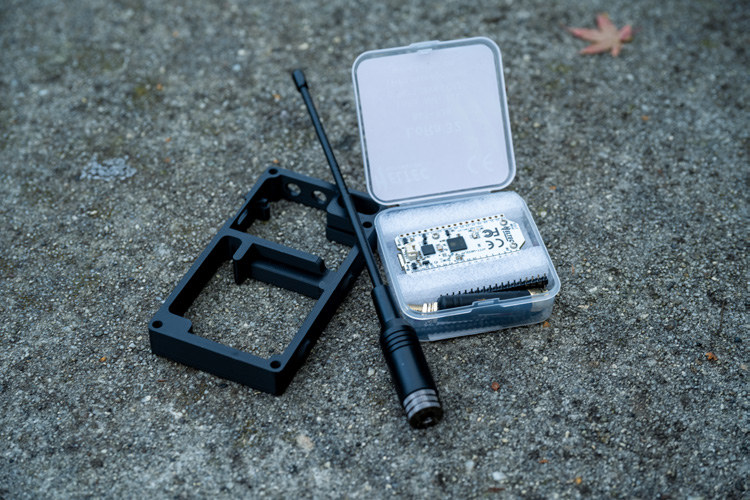
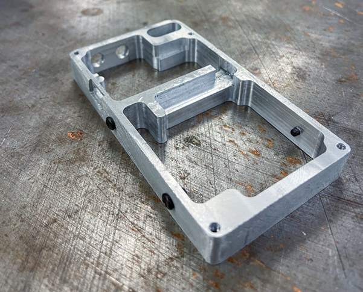
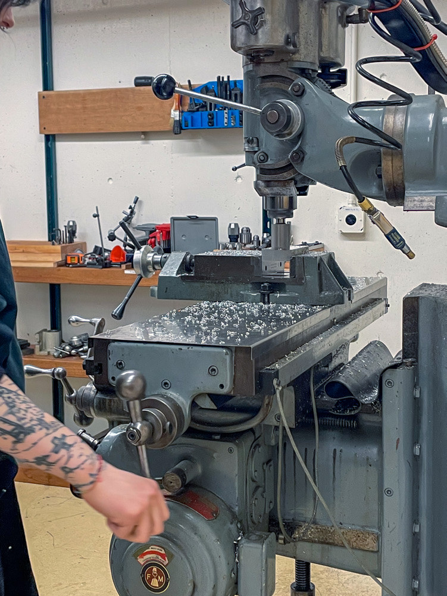
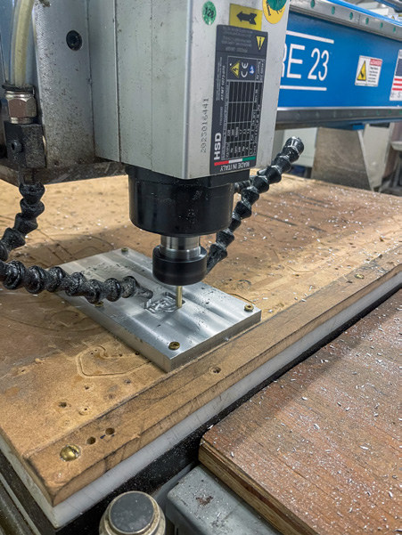

Deadlink.
A compact LoRa radio node that pairs a durable, serviceable enclosure with a distinctly mechanical character.

- Timeframe
- 1 month
- My role
- Enclosure design, supporting electronics & fabrication
- Materials & technology
- HelTec V3 · 6063 aluminum · ASA panels
Connection
in your pocket.
Deadlink began with the goal of connecting people through a durable device that was simple to assemble and easy to replicate. I built around an existing HelTec V3 LoRa radio node running Meshtastic, then designed the enclosure and supporting electronics.
Alongside phone connectivity, the screen and rotary control support interaction on the device. A peer-to-peer, cyberpunk-inspired visual language shaped its frame and removable panels.
Made to
be opened.
The first prototype was printed in PLA. For the second version, I switched to more weather-resistant ASA panels and a 6063 aluminum frame, machined on Slugworks’ CNC router and manual mill.
Threaded accessory holes on both sides and a top loop offer attachment points. A whip antenna replaces the stock stubby antenna, while screw-mounted front and rear panels make the enclosure easy to open and service.
Every millimeter
counts.
Keeping the device slim without sacrificing battery space meant working close to the limits of the internal layout. The board, antenna connector, control, and wiring occupy the upper compartment, while the battery fits into the lower one.
During CNC machining, a final contour accidentally cut through the frame’s attachment loop. I made a plug, welded it in place, and ground the repair smooth. Several panel iterations also removed details that were too fine to print reliably.




Deadlink
Deadlink brings the radio, battery, and controls into a compact, repairable assembly. Its development balanced a distinctive shell with practical lessons in machining, component packaging, and printable detail.